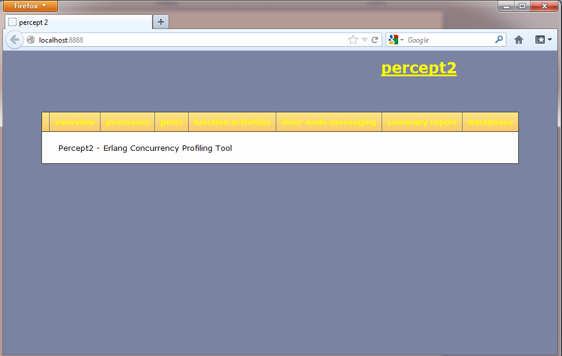
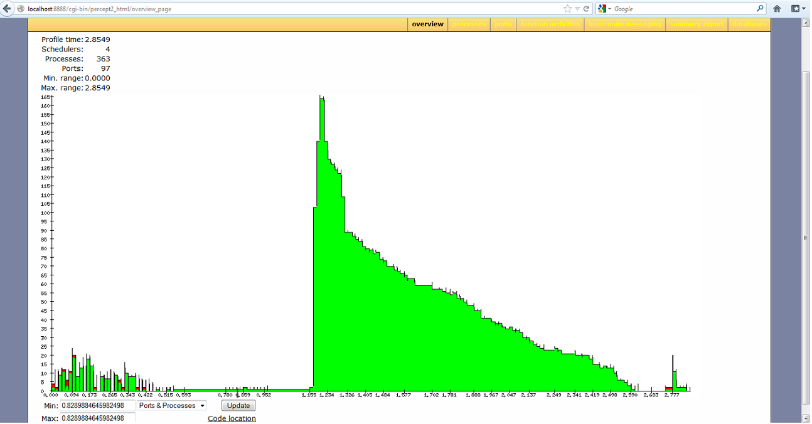
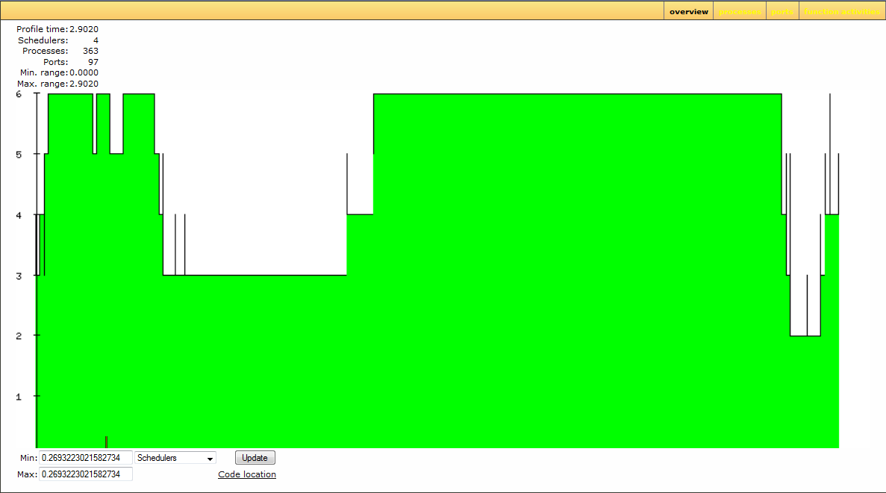
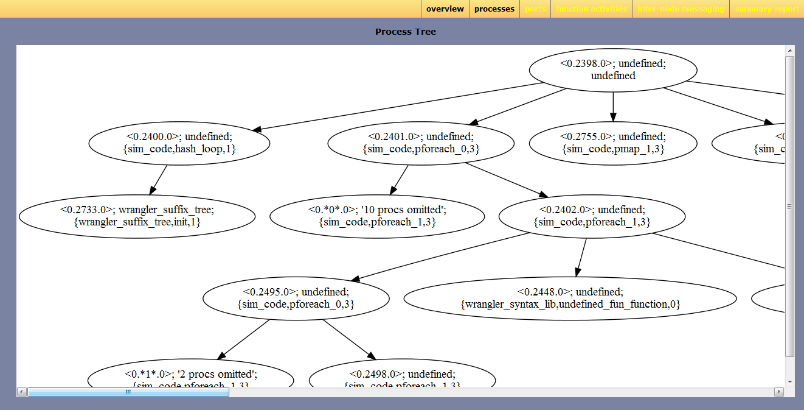
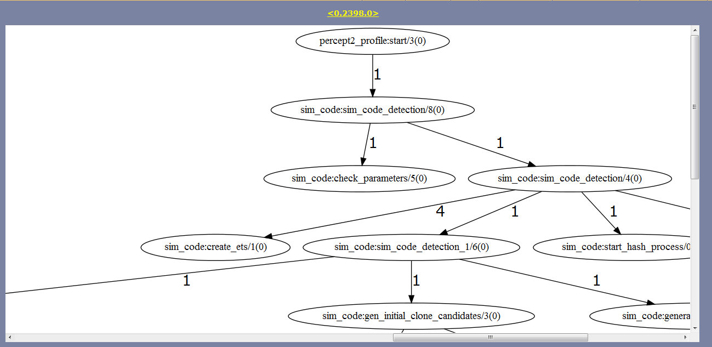
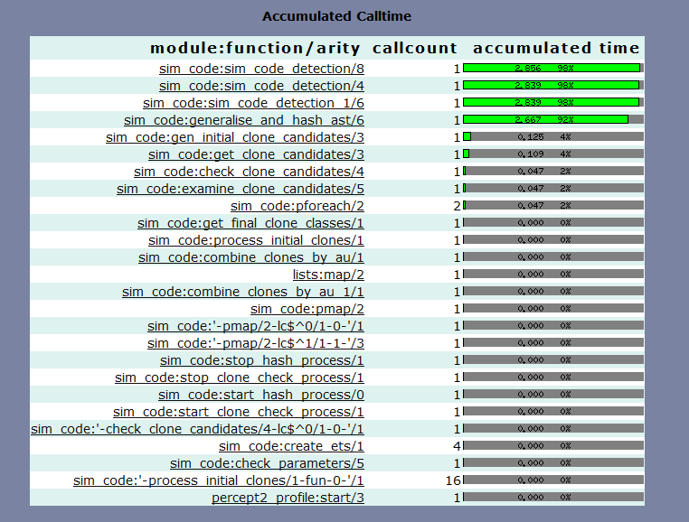
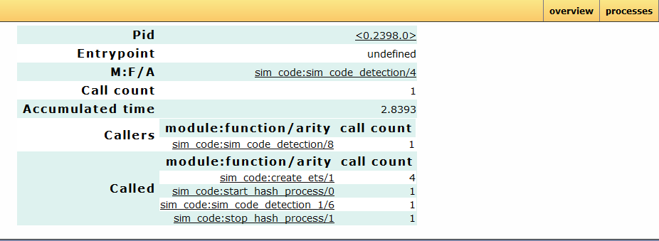
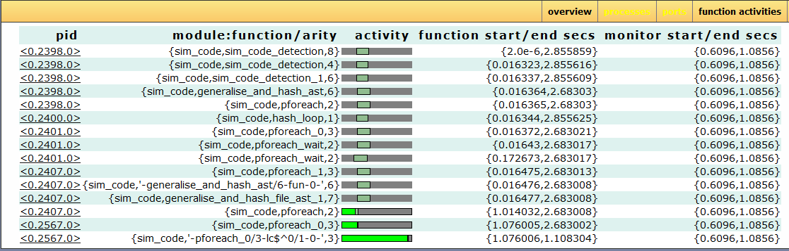
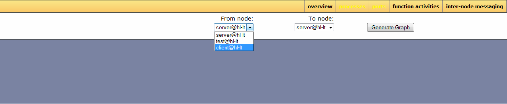
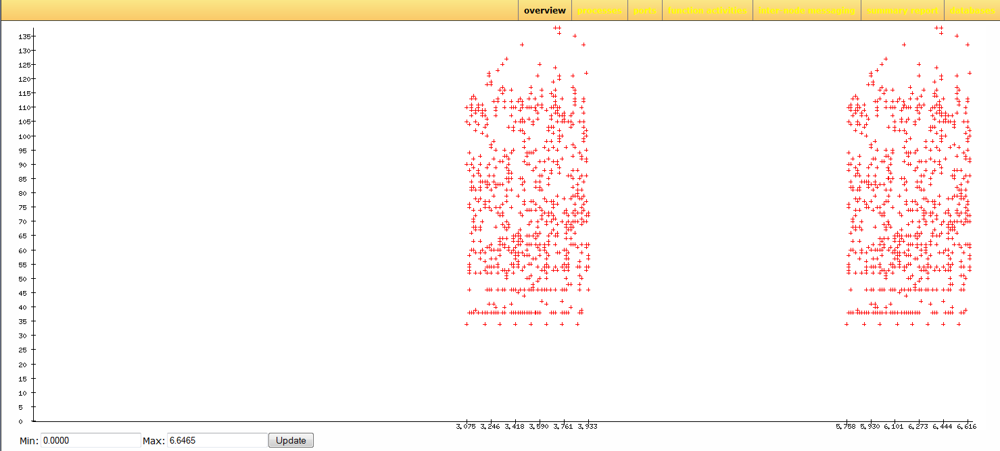

| Overview |  |
Percept2 is an enhanced version of the Erlang concurrency profiling tool Percept.
Percept is a tool to visualise Erlang application level concurrency and identity concurrency bottlenecks. It is part of the Erlang standard distribution.
Percept is an event-based profiling tool; it utilizes Erlang trace information and profiler events to form a picture of the processes and ports runnability. Briefly, Percept uses erlang:trace/3 and
erlang:system_profile/2 to monitor events from
process states, such states are: waiting, running, runnable, free and exiting.
A waiting or suspended process is considered an inactive process and a running or runnable process is considered an active process.
In Percept, events are collected and stored to a file. The file can then be analysed; the analyser parses the data file and inserts all events in a RAM database, percept_db. Once the analysis is done, the data can be viewed through a web-based interface.
There are two functions for start the profiling: percept2:profile/2 and "percept2.html#percept2:profile/3. The former can be used to start the profiling while the application of interest is already running; and the latter can be used to profile an application run from the start to the end. We take the latter case as an example to explain how Percept2 works.
-spec profile(FileSpec :: filespec(),
Entry :: {module_name(), function_name(), [term()]},
TraceProfileOptions::[trace_profile_option()]) ->
'ok' | {'already_started', port()}.
The function percept2:profile/3 takes 3 parameters. A file specification for the data destination as the first argument. The file specification can be a filename (which is the case for Percept) or a wrap file specification as what is used by the dbg library. If a single filename is specified, all the trace messages are saved in this file; if a wrap file specification is used, then the trace is written
to a limited number of files each with a limited size. The actual filenames are Filename ++ SeqCnt ++ Suffix, where SeqCnt counts as a decimal string from 0 to WrapCnt.
With the current version of Percept2, if the number of files in this wrap trace is as many as WrapCnt, the oldest file is deleted then a new file is opened to become the current (as what is described in dbg). For off-line profiling, this means some profiling data may get lost. We are in the process of addressing this problem, and at this stage, we assume the WrapCnt and WrapSize are big enough to accommodate all the trace data.
The second argument is a callback entry-point, from where the profiling starts.
The third argument is a list of options that decide what kind of events to be profiled.
The following options are available:
-- procs : enables the profiling of process concurrency.
-- ports : enables the profiling of port concurrecny.
-- schedulers : enables the profiling of scheduler concurrency.
-- running : enables the feature to distinguish running from
runnable process states.
-- message : this enables the profiling of message passing between
processes;
-- migration : this enables the profiling of process migration between
schedulers;
-- all : this enables all the previous options.
-- {callgraph, Mods} : This enables the profiling of function activities
(call and return_to) of functions defined in Mods.
Given the huge amount of data that could possibly be produced when this
feature is on, we do not recommend profiling many modules
in one go at this stage.
The options running, message, migraion and {callgraph, Mods} will enable the procs option
automatically if the option is not enabled.
To illustrate how the tool works, let's take a similar code detection algorithm for Erlang programs as an example. The similar code detection program takes a list of directories/files and some threshold values as parameters, and returns the similar code fragments found in those Erlang files.
Assume there is a directory named test which contains some Erlang files, we could use the following command to start the profiling
of the similar code detection being applied to the test directory.
percept2:profile("sim_code.dat",
{sim_code,sim_code_detection, [["./test"], 3, 40, 2, 4, 0.8, [], 8]},
[all,{callgraph, sim_code])
In this example, we choose to all the event supported by Percept2, also the call/return_to activities of all those functions defined
in module sim_code.
Alternatively, we could use the following command to have multiple data files to store the trace data:
percept2:profile({"sim_code", wrap, ".dat", 20000000, 10},
{sim_code,sim_code_detection, [["./test"], 3, 40, 2, 4, 0.8, [], 8]}, [all,{callgraph, sim_code])
In the latter case, Percept2 stores trace events to files: sim_code0.dat, sim_code1.dat, etc. The actual run of this profiling command generated
4 data files: i.e. sim_code0.dat, sim_code1.dat, sim_code2.dat and sim_code3.dat.
The profiling will go on for the whole duration until the function sim_code:sim_code_detection/8 returns and the profiling has concluded.
To analyze the data files generated, we use the function percept2:analyze/3, which takes a list of data file names as input. This function will parse and data files in parallel, and insert all events into a RAM database. To analyse the trace data from the previous example, we run the following command:
(test@hl-lt)2> percept2:analyze(["sim_code0.dat", "sim_code1.dat",
"sim_code2.dat", "sim_code3.dat"]).
Parsing: "sim_code0.dat"
Parsing: "sim_code1.dat"
Parsing: "sim_code2.dat"
Parsing: "sim_code3.dat"
Parsed 83686 entries from "sim_code0.dat" in 7.191 s.
Parsed 129217 entries from "sim_code1.dat" in 9.064 s.
Parsed 25927 entries from "sim_code3.dat" in 10.78 s.
Parsed 128830 entries from "sim_code2.dat" in 10.796001 s.
Consolidating...
356 created processes.
97 opened ports.
ok
The previous command can also be invoked as: percept2:analyze("sim_code", ".dat", 0, 3).
To view the data, we could start the web-server using percept2:start_webserver/1 or percept2:start_webserver/0. This command will return the hostname and a port where we should direct the web browser. When percept2:start_webserver/0 is used, an available port number will be assigned by inets.
(test@hl-lt)3> percept2:start_webserver(8888).
{started,"hl-lt",8888}
(test@hl-lt)4>
Now open a web-browser, and go to localhost:8888, you should be able to see a webpage as shown blow.

If we click on the overview button in the menu, Percept2 will generate a graph of the concurrency, as shown in the next snapshot, and send it to the web browser. While this overview gives a rather big picture of the number of active processes/ports at any time during the profiling, we can also zoom in on different areas of the graph either using the mouse to select an area or by specifying min and max ranges in the edit boxes.

If we select 'schedulers' from the droplist option, the graph will show the number of active schedulers at any time during the profiling.

To get a more detailed description about processes, we can select the process view by clicking on the processes button in the menu. The table in the next snapshot shows the processes in an expandable/collapsible tree structure. The process ids shown in the table are click-able, and clicking on a process id will direct you to the process information page. The lifetime bar presents a rough estimate about when the process was alive during profiling. If a process has a registered name, then the name is shown in the Name column, otherwise undefined is shown. The Parent column shows the parent pid of a process, and Entrypiont column shows the entry MFA of a process if it is known.
The column #RQ_chgs shows the number of times a process migrated between run-queues during the profiling, and the actual migration history from one run queue to another is available from the process info information, which can be directed to by clicking on the process id. The migration history is shown as a list of integers. For example, a list [1,2,1] tells us that the process migrates from run queue 1 to run queue 2, then back to run queue 1.
The column #msgs_recieved shows the number of messages received by a process (the first element of the tuple), as well as the average size of all these messages received (the second element of the tuple). In a similar way, the column #msgs_sent shows the number of messages sent by a process, as well as the average size of all these messages sent.

The next snapshot shows the process tree when the + sign next to the Pid <0.23.0> is clicked on. This snapshot shows that 51 processes were spawned by process <0.23.0>. In this case, all the 51 processes have the same entry point. Instead of
listing all these 51 processes, Percept2 only shows information about one process, <0.2413.0> in this case, and all the remaining processes are compressed into one single dummy process. Only unregistered processes with the same parent and the same entry function can be compressed, and if this happens, the values of #RQ_chgs, #msgs_received and #msgs_sent are the sum of all the processes represented by the dummy process.

If we click on the Visualise Process Tree link at the bottom of the table, a graph representation of all the process trees listed in the table will be shown, as in the next snapshot. Currently, the linkage relationships between parent/children processes are not reflected, but will be added in the future. Note that percept2 use the dot command from Graphviz to generate the graph visualisation, so make sure that Graphviz works on your machine.

If functions are traced for a process, and those functions form a callgraph, then a 'show callgraph/time'
link is shown in the Callgraph column of the process table; otherwise no callgraph/time is shown.
The snapshot next shows the callgraph/time page of the process <0.2398.0>. In this callgraph,
the edge label indicates how many times a function is called by its calling function during the profiling.
Note that only functions that are actually traced are included in the callgraph, i.e. a function that is not
traced is not included in the callgraph even if this function is called during the execution of the application.
Underneath the callgraph is a table, as shown in the next snapshot, indicating the accumulated time on each function traced.

Underneath the callgraph is a table, as shown in the next snapshot, indicating the accumulated time on each function traced.

Function names shown in the accumulated calltime table are click-able, and clicking on a function name will direct us to the information page for this function. The snapshot next shows the information about the function sim_code:sim_code_detection/4 executed by the process <0.2398.0>.

To get a more detailed description about ports, we can select the ports view by clicking on the ports button in the menu. Information about the lifetime, parent process pid, etc, are shown in the table, see the next snapshot.

If functions are traced, clicking on the function activities button will direct to
a webpage showing the functions that are active during the time interval selected. A time
interval is selected from the overview page by first either selecting an area along the time line, or by specifying min and max ranges in the edit boxes, then press the update button. The default time interval is the whole profiling period.
As shown in the next snapshot, the function activities table shows how the lifetime of an active function overlaps with the time interval selected. In the activity bar, the green part shows the time interval selected, light green shows the overlapping between the function's lifetime and the time interval selected. The grey part means that the function is active, but the time is out of the time interval selected.

Percept2 provides limited support for tracing distributed nodes so far, but one thing Percept2 can report is the message passing activities between nodes. The tracing of inter-node communication can be set up using Erlang's ttb/inviso library. Once the trace data has been collected, the trace files can be passed to Percept2, which will then analyze the data and extract those message passing activity between nodes.
When multiple nodes have been profiled, clicking on the inter-node messaging button in the menu will direct us to a page like the snapshot shown next.

From this page, the we
can selects the two nodes that we are interested, Node1 and Node2 say, and click on the Generate Graph button, then Percept2 will generate a graph showing the message passing activities from Node1 to Node2. In this The X-axis of the graph represents the time line, and the Y-axis of the graph represents the size of the message sent.

The work is sponsored by the European Union Seventh Framework Programme(FP7). We are very grateful that we were able to extend the Percept tool.Generated by EDoc, Feb 27 2013, 11:36:33.